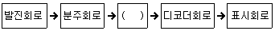
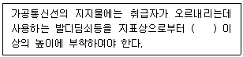
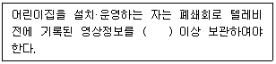
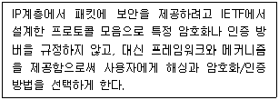
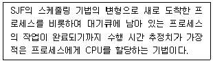

정보통신산업기사 (2022-03-12 기출문제)
1과목: 디지털전자회로
1. 다음 중 동축케이블 용도로 틀린 것은?
- 광대역 전송로로 사용한다.
- TV신호 전송에 사용한다.
- TV신호 분배에 사용한다.
- 장거리 네트워크 구성에 사용한다.
(정답률: 79%)

2. 다음 중 CWDM 특징에 대한 설명으로 틀린 것은?
- 사용하는 파장 간격이 20[nm]로 비교적 넓다.
- 채널 분할이 가능한 대역은 1271~1611[nm]을 사용한다.
- 최대 사용 가능한 채널 수는 8개로 한정되어 사용한다.
- 주로 단거리 전송위주의 엑세스망을 대상으로 사용한다.
(정답률: 73%)
3. 광섬유 케이블에서 발생하는 접속 손실의 원인이 아닌 것은?
- 광섬유 심선 접속 부위의 간격
- 광섬유 심선 단면의 경사
- 광섬유 Core의 직경 및 모양의 상이
- 관로의 재질과 모양
(정답률: 88%)
4. 다음 중 대역확산 방식의 장점이 아닌 것은?
- 방해파 억압
- 에너지 밀도 증가
- 비화특성 우수
- 다중 액세스
(정답률: 88%)
5. 일반적인 전송선로에서 저항을 R, 인덕턴스를 L, 정전용량을 C, 컨덕턴스를 G라 할 때, 무왜곡 전송의 조건으로 옳은 것은?
- RL = GC/2
- RC = LG
- RG = LC
- R + L = C + G
(정답률: 83%)
6. 다음 중 LTE 이동통신의 핵심기술이 아닌 것은?
- OFDM
- 레이크수신기
- MIMO
- 스마트 안테나
(정답률: 84%)
7. 다음 중 이동통신망에서 인접 셀간에 간섭 신호를 감소시키는 방법으로 옳지 않은 것은?
- 기지국의 수신 안테나를 Diversity 방식으로 구성한다.
- 지형에 맞는 안테나를 사용한다.
- 기지국의 출력과 안테나의 높이를 감소시킨다.
- 기지국 안테나의 기울기를 조정하여 안테나 수신 전계 패턴이 지면으로 향하는 Umbrella Pattern이 되도록 한다.
(정답률: 89%)
8. 다음 중 직교진폭변조(QAM)에 대한 설명으로 틀린 것은?
- 진폭변조와 위상변조를 동시에 수행하도록 결합한 변조방식
- 다치 변조(Multi-Mevel Modulation) 방식
- 잡음이 많은 환경에서 데이터 전송에 우수한 방식
- 동일 주파수를 갖고, 위상이 90° 만큼 다른 2개의 반송파(사인파 및 코사인파)를 사용
(정답률: 67%)
9. PCM(Pulse Code Modulation)에 관한 설명으로 틀린 것은?
- 아날로그 신호를 전송로를 통해 전송하는 변조방식이다.
- 연속적인 신호를 불연속적인 신호로 변환한다.
- 표본화(Sampling)와 양자화(Quantization) 과정이 필요하다.
- 부호화(Coding)와 복호화(Decoding) 과정을 거친다.
(정답률: 69%)
10. 다음 중 증폭기의 바이어스를 A급으로 동작시키는 발진회로는?
- LC발진회로
- 수정발진회로
- RC발진회로
- 전자관발진기
(정답률: 67%)
11. 다음 중 문자 방식의 대표적인 프로토콜은?
- DDCMP
- LAP-B
- BSC
- SDLC
(정답률: 83%)
12. 다음 중 OFDM방식을 사용하고 있지 않은 것은?
- 지상파 HDTV
- LTE 이동통신
- WiFi IEEE 802.11n
- 지상파 DMB
(정답률: 75%)
13. 디지털 IC의 정상 동작에 영향을 주지 않고 게이트 출력부에 연결할 수 있는 표준 부하의 숫자를 무엇이라고 하는가?
- 팬 아웃
- 틸트
- 잡음 허용치
- 전달 지연 시간
(정답률: 78%)
14. 16위상 변조방식을 사용하는 변복조기에서 단위 펄스의 시간간격이 T=8×10-4[sec]일 때, 데이터 전송속도와 변조속도는 각각 얼마인가?
- 2,500[bps], 1,250[baud]
- 5,000[bps], 1,250[baud]
- 2,500[bps], 2,500[baud]
- 5,000[bps], 2,500[baud]
(정답률: 81%)
15. 동축케이블의 전기적 특성 중 단위길이당 저항은 사용 주파수(f)와 어떤 관계인가?
- f와 비례
- f와 반비례
- √f와 비례
- √f와 반비례
(정답률: 74%)
16. 동일한 송신 안테나에서 서로 다른 둘 이상의 주파수를 송신하고 주파수에 따른 감쇄 정도가 다른 특성을 이용하여 수신 안테나에서 두 신호를 합성하는 다이버시티 방식은?
- 공간 다이버시티
- 주파수 다이버시티
- 편파 다이버시티
- 각도 다이버시티
(정답률: 81%)
17. 다음은 디지털 시계의 블록 다이어그램이다. 괄호 안에 들어갈 알맞은 항목은 무엇인가?

- 플립플롭회로
- 카운터회로
- 증폭회로
- 드라이브회로
(정답률: 81%)
18. 4개의 J-K 플립플롭을 이용하여 구성할 수 있는 분주기의 최댓값은 얼마인가?
- 8분주기
- 10분주기
- 16분주기
- 24분주기
(정답률: 85%)
19. 다음 중 혼합형 동기식 전송 방식(Isochronous Transmission)의 특징이 아닌 것은?
- 일반적으로 비동기식 전송보다 전송속도가 빠르다.
- 동기식 전송과 비동기 전송의 특성을 혼합한 방식이다.
- 문자와 문자 사이에 휴지시간이 없다.
- STart bit와 Stop bit를 가진다.
(정답률: 84%)
20. 다음 중 각 조합논리회로에 대한 설명으로 옳은 것은?
- 반가산기의 캐리는 입력 X, Y가 모두 0인 경우에만 1이 된다.
- 전가산기는 두 개의 2진수 X, Y와 윗자리로부터 올림 한 두 개를 더한 조합논리회로이다.
- 병렬가감산기는 2의 보수 뺄셈도 가능하다.
- BCD가산기는 표현범위가 0~9이므로 계산시 결과에 대한 보정이 필요 없다.
(정답률: 70%)
2과목: 정보통신기기
21. 정보 단말기의 고기능화 요소로 틀린 것은?
- 다기능화
- 고가화
- 지능화
- 복합화
(정답률: 85%)
22. 디지털 케이블방송에서 케이블모뎀의 변·복조방식이 아닌 것은?
- 2FSK
- QPSK
- 64QAM
- 256QAM
(정답률: 75%)
23. CATV방송에서 입력측 (C/N)=20 이고, 출력측 (C/N)=10 이라고 가정하면 잡음지수(Noise Factor)는?
- 0.5
- 1
- 2
- 3
(정답률: 86%)
24. IPTV의 주요 플랫폼과 기술의 구성 요소로 연결이 맞지 않는 것은?
- 헤드엔드 기술 – 압축 다중화
- 네트워크 기술 – QoS 보장기술
- 단말기술 – 셋탑 내 미들웨어기술(Middleware)
- 보안기술 – Multicast Routing Protocol
(정답률: 76%)
25. 다음 중 AM, FM 수신기의 구성도를 비교 시 FM 수신기에만 있는 기능이 아닌 것은?
- 진폭제한기(Limiter)
- 저주파증폭기
- 디엠파시스회로
- 스켈치회로
(정답률: 69%)
26. 다음 중 위치정보와 무선통신망을 이용하여 교통안내, 긴급구난, 인터넷 등 Mobile Office를 제공하는 것은?
- Telematics
- RFID
- CDMA
- VoIP
(정답률: 76%)
27. 다음 중 디지털서비스장치(DSU)에서 장치간에 통신을 행하기 전에 공통 프로토콜의 합의사항으로 틀린 것은?
- 전송속도
- 패리티 비트의 체크방법
- 에러 회복 방법
- 데이터의 총용량
(정답률: 84%)
28. 국내 종합유선방송을 포함한 방송공통수신설비에 사용되는 디지털 변·복조방식이 아닌 것은?
- PAL
- 8VSB
- QPSK
- 256QAM
(정답률: 74%)
29. 다음 중 유선기반의 홈네트워크 기술이 아닌 것은?
- Home PNA
- PLC(Power Line Communication)
- Ethernet
- Bluetooth
(정답률: 85%)
30. 다음 중 이동통신시스템에서 무선용량을 증대시키는 주요 기술로 볼 수 없는 것은?
- Power Control
- Antenna Diversity
- H-ARQ
- 2BIQ
(정답률: 61%)
31. 다음 중 화상회의 시스템에 대한 기능으로 틀린 것은?
- 일반적으로 소프트웨어 기반 영상은 하드웨어 기반에 비해 화질이 좋지 않다.
- 영상신호의 부호화와 복호화를 위해 코텍이 사용된다.
- 고화질의 영상을 전송하기 위한 영상압축 기술이 필요하다.
- 화상회의 시스템은 보안에 강하다.
(정답률: 81%)
32. 댁내에서 다양한 정보 가전이 네트워크로 연결되어 기기, 시간, 장소에 구애 받지 않고 다양한 서비스를 제공하는 통신 서비스는?
- WiBro
- DMB
- DTV
- Home NetWork
(정답률: 86%)
33. 다음 중 정보 단말기의 입·출력 장치에 속하는 것은?
- 변·복조부
- 회선 접속부
- 오류처리부
- 출력 장치부
(정답률: 73%)
34. 다음 중 화상통신회의 시스템의 기본적인 구성요소가 아닌 것은?
- 영상 시스템부
- 제어 시스템부
- 음향 시스템부
- 망분배 시스템부
(정답률: 84%)
35. 자동식 교환방식 중 광교환 방식의 종류가 아닌 것은?
- 공간분할방식
- 시간분할방식
- 파장분할방식
- 코드분할방식
(정답률: 62%)
36. 비트 단위의 다중화에 사용되고, 시간 슬롯이 낭비되는 경우가 많이 발생하는 다중화는?
- 주파수 분할 다중화
- 동기식 시분할 다중화
- 비동기식 시분할 다중화
- 코드 분할 다중화
(정답률: 63%)
37. 영상회의시스템에서 영상회의 세션을 알고, 제어하고, 종료하는데 필요한 시그널 제어에 많이 사용되는 프로토콜은?
- SIP
- MPEG-2
- G.722
- 씬
(정답률: 76%)
38. 영상회의 시스템에서 영상신호를 부호화 및 복호화하는 것을 무엇이라 하는가?
- Nodem
- Codec
- DSU
- OCR
(정답률: 80%)
39. 광통신시스템에 사용되는 광소자 중 능동형인 것은?
- 커플러
- 분배기
- 광증폭기
- 편광조절기
(정답률: 70%)
40. 정보통신시스템의 통신회선 종단에 위치한 신호변환장치 중에서 디지털 전송로인 경우 단극성 신호를 쌍극성 신호로 변환이 가능한 장치는?
- 코덱
- 음향결합기
- 코드변환기
- 디지털 서비스 유니트
(정답률: 70%)
3과목: 정보전송개론
41. 다음 중 침입탐지시스텝(IDS)의 기능으로 틀린 것은?
- 사용자 시스템의 행동 분석 및 관찰
- 중요 데이터의 무결성 평가
- 잘 알려진 공격 방법에 대한 패턴 기반 대응
- 외부에서 내부 네트워크 침입을 방지
(정답률: 65%)
42. 다음 중 물리계층 장비에 대한 설명으로 옳지 않은 것은?
- 네트워크 장비간의 실제 전기적인 전송을 담당한다.
- 리피터는 물리적인 신호를 다시 증폭하는 역할을 한다.
- 허브는 네트워크에 다수의 단말을 연결할 때 사용된다.
- 브리지는 두 개의 근거리통신망(LAN)을 서로 연결해 주는 통신망 연결 장치이다.
(정답률: 72%)
43. 다음 중 SDH 전송속도로 틀린 것은?
- STM-1 : 155.520 [Mbps]
- STM-4 : 622.080 [Mbps]
- STM-8 : 1,244.016 [Mbps]
- STM-16 : 2,488.320 [Mbps]
(정답률: 80%)
44. 거리 벡터 라우팅 기법을 사용하는 프로토콜로 경로 선택을 오직 홉(hop) 카운트에 의존하는 라우팅 프로토콜은?
- RIP
- SMTP
- OSPF
- IGRP
(정답률: 70%)
45. AS(Autonomous System) 내부에서 사용하는 라우팅 프로토콜이 아닌 것은?
- RIP(Routing Infomation Protocol)
- IGRP(Interior Gateway Routing Protocol)
- OSPF(Open Shortest Path First)
- BGP(Border Gateway Protocol)
(정답률: 64%)
46. 데이터통신을 위한 프토콜을 구성하는 중요한 요소로 적합하지 않은 것은?
- 구문
- 의미
- 채널 용량
- 타이밍
(정답률: 80%)
47. OSI 7계층에서 논리적인 통신로의 설정 및 종단 시스템간의 데이터 전송에서 오류 검출 및 정정, 흐름제어 등의 기능을 제공하는 계층은?
- 2계층
- 3계층
- 4계층
- 5계층
(정답률: 61%)
48. TFTP가 사용하는 전송 계층 프로토콜로 옳은 것은?
- IP
- TCP
- UDP
- CFTP
(정답률: 67%)
49. 서로 다른 프로토콜을 가진 네트워크를 연결하기 위해 사용되는 네트워크 장비는?
- 허브
- 리피터
- 라우터
- 게이트웨이
(정답률: 68%)
50. IPv6의 특징으로 틀린 것은?
- 헤더 정보가 IPv4보다 간단하다.
- IPv4보다 패킷 처리가 빨라졌다.
- Mobility 기능은 IPv4가 더 좋다.
- 멀티캐스트가 IPv4의 브로드캐스트 역할을 대신한다.
(정답률: 74%)
51. 두 부호어의 비트열이 A=(100100), B=(010100) 일 때 두 부호어의 헤밍거리는?
- 1
- 2
- 3
- 4
(정답률: 79%)
52. 다음 중 패리티검사 방법에서 에러의 발생을 검출할 수 없는 경우는 몇 개의 오류가 동시에 발생할 경우인가?
- 4개
- 3개
- 5개
- 1개
(정답률: 72%)
53. 노드나 링크에 이상이 발생했을 경우, 동작이 중단되지 않고 계속 유지될 수 있도록 하는 네트워크의 특성으로 옳은 것은?
- 신뢰성(Reliability)
- 보안성(Security)
- 시간지연성(Latency)
- 처리율(Throughput)
(정답률: 74%)
54. 정보통신 관련 표준안을 제안하는 기구가 아닌 것은?
- ISO
- ITU-T
- ISDN
- ANSI
(정답률: 72%)
55. 전송제어 프로토콜 중 문자방식 프로토콜에서 전송의 끝 및 데이터 링크 초기화 부호는?
- SYN
- SOH
- EOT
- ACK
(정답률: 61%)
56. LAN 장비 중에 IP가 할당된 장비의 동작유무를 ping 명령으로 확인할 수 없는 장비는?
- 개인용 컴퓨터
- 허브
- 스위치
- 라우터
(정답률: 61%)
57. 인터넷의 TCP와 UDP는 OSI의 7계층 기준 모델이 어디에 해당되는가?
- 물리 계층
- 데이터링크 계층
- 네트워크 계층
- 전송 계층
(정답률: 73%)
58. 전송측이 전송한 프레임에 대한 ACK 프레임을 수신하지 않더라도, 여러개의 프레임을 연속적으로 전송하도록 허용하는 기법으로 옳은 것은?
- 슬라이등 윈도우 흐름제어 기법
- 정지 대기 흐름제어 기법
- 슬라이딩 대기 흐름제어 기법
- 슬라이딩 정지 흐름제어 기법
(정답률: 76%)
59. 데이터링크계층의 주요 기능에 해당되지 않는 것은?
- 흐름제어
- 경로설정
- 오류제어
- 프레임 동기
(정답률: 60%)
60. 다음 중 국제표준화 관련 기구의 성격이 다른 것은?
- ITU-T(구CCITT) : 전화 팩시밀리, 공중 데이터 통신망 기술들의 표준화 담당
- ISO : 데이터 통신 프로토콜 및 컴퓨터 통신 프로토콜의 표준화, OSI 7계층 참조모델을 정의
- ANSI : 국가표준화기구로서 미국의 산업표준화 제정 기관
- NIST : 네트워크 통신의 개방 시스템 상호연결 표준화 담당
(정답률: 57%)
4과목: 전자계산기일반 및 정보설비기준
61. 다음은 전기통신사업법에 따른 보편적 역무의 내용에 해당되지 않는 것은?
- 유선전화 서비스
- 긴급통신용 전화 서비스
- 장애인·저속등층 등에 대한 요금감면 서비스
- 구내통신 서비스
(정답률: 70%)
62. 가공통신선 지지물의 등주방지에 대한 설명이다. 괄호안에 들어갈 내용으로 맞는 것은?

- 1.4[m]
- 1.6[m]
- 1.8[m]
- 2.0[m]
(정답률: 69%)
63. 어린이집 내 폐쇄회로 텔레비전의 설치·운영에 관한 설명이다. 괄호에 들어 갈 내용으로 맞는 것은?

- 30일
- 60일
- 90일
- 120일
(정답률: 68%)
64. 공사를 설계한 설계용역업자가 자신이 작성한 실시설계도서를 얼마나 보관하여야 하는가?
- 해당 공사가 발주된 후 5년간
- 해당 공사가 준공된 후 5년간
- 하자담보책임기간이 종료될 때까지
- 하자담보책임기간 종료 후 1년간
(정답률: 74%)
65. 다음 중 정보통신공사업법에 의한 정보통신공사의 감리에 대한 설명으로 옳은 것은?
- 품질관리·시공관리 및 안전관리에 대한 지도 등에 관한 발주자의 권한을 대행하는 것
- 유지관리·시공관리 및 설계관리에 대한 지도 등에 관한 발주자의 권한을 대행하는 것
- 공사관리·기술관리 및 유지관리에 대한 지도 등에 관한 발주자의 권한을 대행하는 것
- 기술관리·공사괸리 및 안전관리에 대한 지도 등에 관한 발주자의 권한을 대행하는 것
(정답률: 78%)
66. 다음 중 정보통신공사업법에서 정의한 다른 사람의 위탁을 받아 공사에 관한 조사, 설계, 감리, 사업관리 및 유지관리 등의 역무 수행을 업으로 하는 것을 무엇이라 하는가?
- 수급공사업
- 정보통신공사업
- 감리업
- 용역업
(정답률: 64%)
67. 감리원이 업무를 성실히 수행하지 않아 공사가 부실하게 될 우려가 있을 때 시정지시 또는 감리원의 변경요구 등 필요한 조치를 취할 수 있는 사람은 누구인가?
- 공사업자
- 발주자
- 공사용역업자
- 공사설계업자
(정답률: 72%)
68. 다음의 설명에 대한 보안기술은 무엇인가?

- 전자서명
- Kerberos
- IP 보안
- 전송계층보안(TLS)
(정답률: 64%)
69. 다음 중 운영체제에 대한 설명으로 틀린 것은?
- 시스템의 응답시간과 반환시간을 단축하는 것이 목적이다.
- 시스템 자원의 효율적인 운영과 자원에 대한 스케줄링 기능을 수행한다.
- 운영체제는 시스템 소프트웨어의 일종이라 할 수 있다.
- 운영체제는 시스템 명령이기 때문에 사용자와 직접 상호작용을 할 수는 없다.
(정답률: 76%)
70. 주기억장치의 용량이 512[kbyte]인 컴퓨터에서 32비트의 가상주소를 사용하고, 페이지의 크기가 4[kbyte]면 주기억장치의 페이지 수는 몇 개인가?
- 32
- 64
- 128
- 512
(정답률: 76%)
71. 마더 보드에 포함되지 않은 기능 혹은 자원을 컴퓨터에 추가하기 위해 사운드, 모뎀, 네트워크 등의 카드를 연결하는데 사용하는 것은?
- I/O포트
- CPU
- 메모리 슬롯
- PCI 확장 슬롯
(정답률: 72%)
72. 기존 시스템의 데이터를 새로운 시스템으로 옮기는 데이터 전환 과정으로 틀린 것은?
- 변환(transformation)
- 추출(extraction)
- 처리(process)
- 적재(load)
(정답률: 65%)
73. OSI 계층별로 데이터를 전송하는 단위가 잘못 연결된 것은?
- 물리 계층 – 비트(Bit)
- 데이터링크 계층 – 프레임(Frame)
- 네트워크 계층 – 패킷(Packet)
- 전송 계층 – 노드(Node)
(정답률: 77%)
74. 다음 중 TCP/IP 4개 계층에 속하지 않은 것은?
- 응용 계층
- 전송 계층
- 네트워크 계층
- 인터넷 계층
(정답률: 53%)
75. 다음 설명은 어떤 스케줄링에 해당하는가?

- RR
- MFQ
- SRT
- FIFO
(정답률: 78%)
76. 다양한 콘텐츠를 제공자한테서 고객에게 안전하게 전달하고, 고객이 불법적으로 콘텐츠를 유통하지 못하도록 하는 기술로, 암호화 기술을 이용하여 사용 권한을 만족하는 사용자에게만 디지털 콘텐츠 사용을 허가하는 개념을 포괄하는 기술은 무엇인가?
- DRM
- RKI
- DOI
- INDECS
(정답률: 74%)
77. 다음 중 입력장치만으로 구성된 항은?
- 자기디스크, 라인 프린터, OMR
- OMR, OCR, 콘솔 키보드
- 콘솔 키보드, 카드 리더, XY플로터
- OMR, 카드 리더, XY플로터
(정답률: 74%)
78. 침입 차단을 목적으로 하는 방화벽의 기본 기능이 아닌 것은?
- 패킷 분석 및 공격 탐지
- 접근제어
- 로깅과 감사 추적
- 인증
(정답률: 50%)
79. 다음 중 HTTP의 TCP 포트 번호는?
- 25
- 53
- 80
- 21
(정답률: 66%)
80. 데이터 검증 방법에 대한 설명이 틀린 것은?
- 응용 프로그램을 통한 데이터 전환의 정합성을 검증한다.
- 로그 검증 외에 별도로 요청된 검증 항목은 검증하지 않는다.
- 데이터 전환 과정에서 작성하는 추출, 전환, 적재로그를 검증한다.
- 사전에 정의된 업무 규칙을 기준으로 데이터 전환의 정합성을 검증한다.
(정답률: 77%)